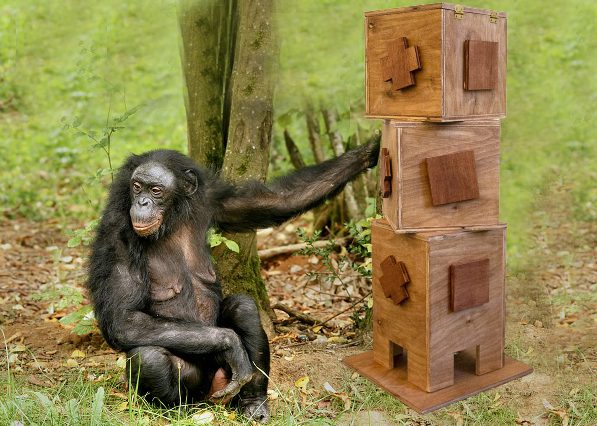
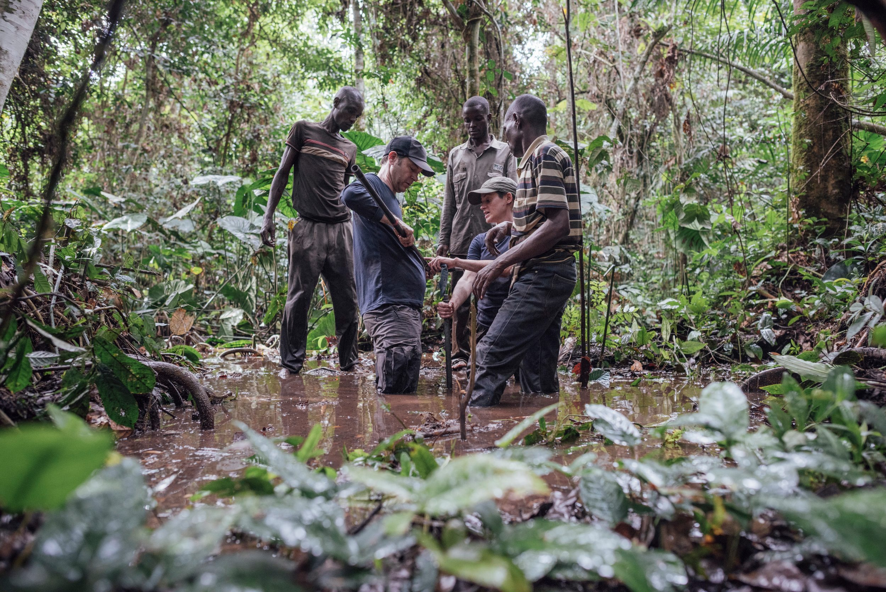

Week 14
Final Prototype

<
Looking Back
While taking different approaches in Designing an enriching experience for the Bonobos in capitivity, I focused one thier unique interlectual behaviours, thier natural habitat, and the playfulness of their social dynamics. However, none of them seems complete to me. There seems to be a huge gap in what they can do, and what is benificial for the bonobos. Many studies and experiments have been focusing on their cognitive abilities and very little on whether completeing this tasks is helpful, enjoyful or benificial for the bonobs.
Based on these questions and concerns I have from my reserches, I wanted unite all the different approaches I've taken and create a device that can be used for the bonobo's enrichment both intellectually and enviromentally, for experimental and scientific purpose.
From the Begining — Learning about the Bonobos
The Bonobo is an endangered great ape. They are identified with thier long legs, pink lips, dark face and tufted tail. They also have very distingushiable parted hair on thei head. The bonbos inhabits in the forests in Congo Basin. Bonobos are both terresterial and arboreal, which means they move and live on both land and trees.
The tipical life span of a bonobo is capitivity is about 40 years. There are estimate 10,000 to 50,000 of them exisit currently. The averaging height is 28 to 35 inches and the averaging weight is 68 to 86 pounds. Their gestation period is about 8 months (240 days).
The bonobo society is what scientist call it a "gynecocracy", where females holds the most power, social prevelige and resources.The bonobos are very social and their party can be as large as 100 members. Which will usually devided into small groups through out the day to hunt for food. Besides being highly social, bonobos also presents behaviours such as voluntarily sharing food, having distinctive facial expressions during "play session".
More on to their social life, what's the most well-known social behavior of the bonobos are their sexual behaviours. nlike other animals, sexual acttivies are not solely serving for reproductive purpose. Instead, they are means to form social bonds, or resolves conflict or act as postconlifct reconciliation. They are so far, the only non-human animal to have been observed with tongue kissing. In addition, they alsoe enage in ventro‐ventral position, meaning fact-to-face interourse.
Moreover, the the bonobos also engage in same sex sexual behaviours such as genital rubbing in both male-male and female-female settings. Mothers will sometimes help their sons get more matings from other females. Adult males bonobs sometimes will have sex with infants.Reaserches also have shown that sex can be used as tension regulation as well. One study in perticular show that during short term corwding and feeding, the non-reproductive sexual interaction has intensified where as copulayion did not.
A short video on Bonobs
[Click Here to View Full Research Paper] [Click Here to View Full Research Paper] [Click Here to View Full Research Paper]
[Click Here to View Full Research Paper] [Click Here to View Full Research Paper] [Click Here to View Full Research Paper]
[Click Here to View Full Research Paper] [Click Here to View Full Research Paper] [Click Here to View Full Research Paper]
[Click Here to View Full Research Paper] [Click Here to View Full Research Paper] [Click Here to View Full Research Paper]
Human influence on Bonobo's Living
Most of the bonobo's habitat destructions are resulted from slash-and-burn subsistence agriculture, human population growth and migration and residue from civil warfare (availability of modern weaponry and ammunition; military-sanctioned hunting). In addition, based on Bonobos' size and thier mobility on lands and tree, there are few natural predators. Most of their endangerment are coming from Human. With their long interbirth interval (various from 4.5 - 8 years), and later maturity (13-15 years). Poaching is also considered the number one threat to the bonobos, mainly for bushmeat and for some medicinal purposes. Bonobos reproduce slowly, and thus their populations are particularly susceptible to direct losses caused by humans.
Based on thier currently living situation, many bonobos are starting to riely on "fallback" food.
"..bonobos have adapted to this fragmented habitat by feeding on only a few fruit species, including an important number of non‐tree species (liana, herb and savannah shrub), in comparison to populations living in dense forests. These non‐tree plants have been defined as fallback and non‐preferred foods, which are most probably consumed to maintain high frugivory."
"Fallback" food, even though the nutrition value won't be as low as they would've have encountered in the wild, it does help them practice their survival skills as in balancing fallback food and staple food. Especially they will less likely run into situation where preferred food is in scarce. Studies has shown that the importance of fallback food and how it help the bonobos subsist at high densities and to maintain cohesive groups.
[Click Here to View Full Research Paper] [Click Here to View Full Research Paper] [Click Here to View Full Research Paper]
Bonobo's Cognitive Ability
From my previous research on bonobo's congnitive behaviours, bonobs are capble of passing the mirror test, a rough test to see that if an animal is able to self-recognize visually. Research has also shown that they are, similar to humans have attentional bias towards emotional expression than neutral expression. In addition, the Bonobos also communocate through facial expression. In on study, the scientists looked specifically into how facial communication is used during bonobos' play session, "play faces are context specific and transmit an unequivocal positive message that cannot be misconceived"
In addition, one specific series of experiment also tested in details on Bonobos cognitive skills both in physcial and social domians. In the physical domian, the experimenters tested the bonobos to process space, quantity and causality. It shows that bonobos have strong cognitive abilities and are very quick to learn and make connections between the demostration and the tasks they are given.
[Click Here to View Full Research Paper] [Click Here to View Full Research Paper] [Click Here to View Full Research Paper]
Introduce Twizzile: An enrichment and experimenytal device for the bonobos
I was lucky enough to be in contact with Jessica Sheftel who works at the San Diego Zoo and haave exprience working with the Bonobos. SHe was kind enough to show me what they are currently using for the Bonobos as enrichment at the zoo. Which are very similar to dog toys. In addition, she also provided me with description on their current exhibit set up that includes serveral climbing strucure and live plants; as well as the common material they use for the Bonobos. (TREX, which I unfortunately did not get my hands on.)
As stated above, there are many experiments done on testing and exploring Bonobos cognition abilities, yet very little study has been done to show whether all these cognitive tasks are fulfilling to the bonobos. My final proposal is to create a modular device that can be implemented in both research facilities as well as zoos. The device does including food as a reward, however it can be used solely as a enrichment device as well as a research aid.
Twizzle is designed for the bonobos to excersise their cognitive abilities with food as rewards. The bonobos will twist each box to align the exterior patterns. Once the correct match is made, the twizzle will dispense a treat.
Twizzle is made out of three boxes with one rod in the center for rotation. Each box has hole with a tube, once the tubes are aligned, an item of food can fall along the tube and be dispensed from the top box. The top box also function as an storage space, it allows the keepers to store lots of food without refill thorughout the day. The opening at the bottom of the box will allow food to roll in and fall through to the next box once it gets turned.
The exterior of Twizzle has exchangable pieces that are bonded by strong magnets. Currrently, I've only designed two diffirent exterior sets one is distinguisable by shape, they other is by color. Once the Bonobos corretly align the outside by twisting each box, the inner mechanism allows it to drop one treat (berries or nuts) at a time. Once the food item is dropped it will hit a bell at the bottom and create a sound to let the bonobos know the food has been dispensed
With the small amout dispensing, this device also passively triger the "Fallback" food diet the bonobos are currently adopting in the wild
There is also a base included in this design, where the keepers can use to stablize the device as well as lock it in place in case it causes any danger to the bonobos.

Based on my research I believe that with very simple demonstration the bonobos can understand how this device function and progress to learn harder patterns. In terms of research and experiments, I believe with this device, we can learn whether accomplishing these cognitive tasks is rewarding to the bonobos. For example, with monitoring devices or taking out the food reward and see if they are still interests. In addition, further exploring their cognitive skills with different settings, such as using sound, scent or play as an "outcome" instead of food to see how they interact with it.
Video Demo